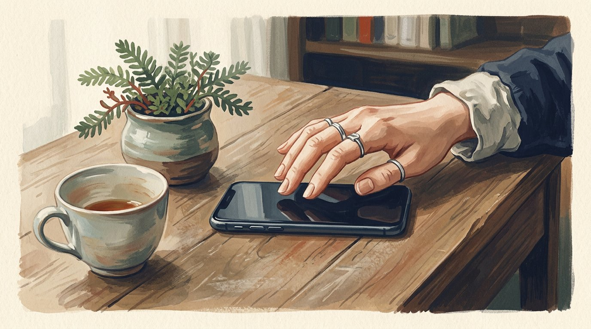
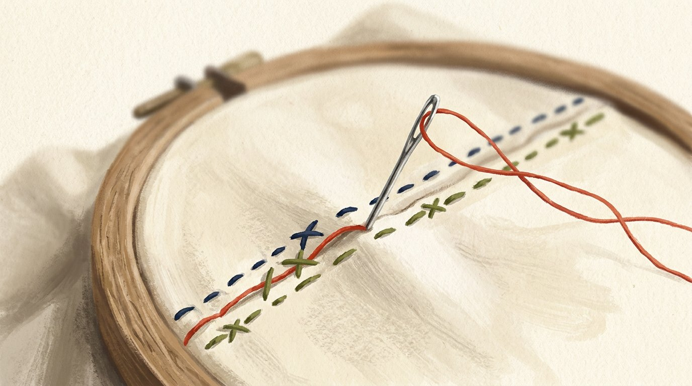
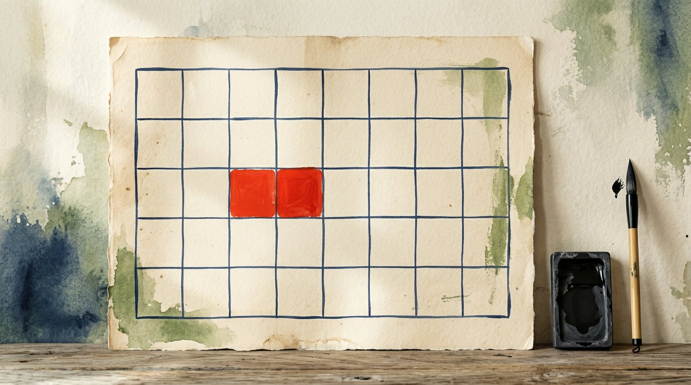

创作说明：本文由霓凰在 AI 辅助下创作，配图为 AI 生成。文中出现的小龙虾灵宝为虚构角色，生活场景为综合改编的示例。

🌿 一个「好的」是怎么溜出去的
先说一个很多人都熟的场景。周三上午十点，你正在赶一份表格，同事探头过来：「姐，下周的活动方案你帮我看一眼呗，就一眼。」你嘴里先于脑子说出了两个字：「好的。」
说完大概三秒钟，你就开始后悔。因为你很清楚，「看一眼」从来不是一眼。它是半个晚上，是你本来要陪孩子读绘本的那半个晚上。
霓凰自己也经常这样。她写过一份清单，记下一周里脱口而出的「好的」，数了数，一周十一个，其中真心想答应的只有四个。剩下七个，是因为对方站在面前，空气安静了两秒，她就把这两秒填上了。
灵宝趴在画册上听完，用触须点了点那份清单：「你们人类的『好的』，比我们虾的蜕壳还快。」
🍵 半天的缓冲，到底缓冲什么
办法很土：不当场答应，也不当场拒绝，只说一句固定的话——「我看看日程，中午前回你。」
这句话有几个好处。它不撒谎，你确实要看日程。它不得罪人，对方听到的是「我在认真考虑」。最要紧的是，它把「回答」和「面对面的尴尬」拆开了。当场答应的那一刻，你回答的往往是对方的表情，不是对方的请求。
霓凰试了两周。第一周很别扭，说完那句话，手心还会出汗。第二周发现一件有意思的事：那十一个「好的」里，等到中午回头再看，大约有一半，自己已经不想要了。同事那份方案，其实他自己再翻一遍就能改好；亲戚借钱的事，她翻出了去年那笔还没还的，心里立刻有数了。
🧶 缓冲期里可以问自己的三个小问题
不用写成清单贴在墙上，记在脑子里就行，大概就是下面这几句。
这件事做完，我手头哪件事会被挤掉？这个问题很具体，比「我愿不愿意帮」好回答得多。比如帮同事看方案，挤掉的是周四晚上的绘本时间，那就是一个可以拿出来称一称的东西。
如果这件事发生在一个月以后，我还会答应吗？很多请求挑的是「现在」这个时间点，对方急，你就跟着急。把日期往后推一推，你会发现有些事的急，是对方的急，不是你的。
如果我拒绝了，最坏的结果是什么？大部分时候最坏不过是对方失望半天，然后去找别人。真正会因为你一句「这次不行」而垮掉的事，其实很少。

🪡 拒绝的话，可以缝得软一点
有人担心，缓冲完了，还是得开口说不。霓凰的体会是，拒绝的话也可以有针脚，不一定硬邦邦剪断。
她现在常用的几种说法：「这周我排满了，下周三之后可以看一下，你等得了吗？」「方案我没法逐页帮你看，可以只给你十分钟，讲讲我最先注意到的两处。」「这次借钱我帮不上，不过我知道有个办法，可以帮你问问。」
你看，每一句都在说清楚自己能给多少，同时没有把门关死。能给多少，是你的事，对方怎么想，是对方的事。这两件事分开放，心里会轻很多。
墨宝曾经评价过这个办法，它说：「像把一滴墨先放在水里，看它自己散开多大，再决定要不要蘸笔。」霓宝则更实际一点：「那就是给任务加一个排队时间嘛，我们终端里天天这么干。」
🌙 这个办法的边界
也要老实说一句，这个办法不是万能的。家里人身体不舒服、孩子半夜发烧，这种时候不需要缓冲，直接去。缓冲是留给那些「可以等半天，也不会出事」的请求的，它们占了日常的大多数。
另外，缓冲不是拖延。说了中午回，就要在中午回，哪怕回的是「抱歉，这次不行」。一个说到做到的「再看看」，比十个勉强的「好的」更让人信得过。

✨ 三条小建议
第一，先在手机备忘录里存一句固定的话，「我看看日程，中午前回你」，慌的时候直接复制。第二，一周结束时数一数自己的「好的」，不评判，只是数。第三，每周给自己留一块没有人能预约的时间，哪怕只有四十分钟，在日历上涂成一个颜色，写上「霓凰在」。
周三下午，霓凰把那句话发给了同事，然后端着那杯已经凉了一半的茶，翻开了孩子的绘本。
💌 霓凰 记于周三午后
资料来源
本文为作者生活观察与个人经验的随笔，未引用外部统计数据。